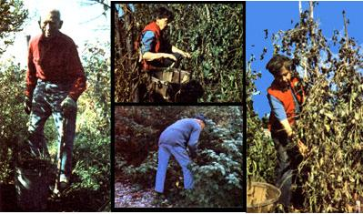

Reprinted by permission of Schocken Books, Inc. from Helen and Scott Nearing's Continuing the Good Life: Hall a Century of Homesteading copyright© 1979 by the authors. Available in hard covor for the $9.95 from any good bookstore or for $9.95 plus 95 cents shipping and handling from Mother's Bookshelf, P.O. Box 70, Hendersonville, North Carolina 28739.
In our part of New England, the general gardening practice is to start planting on Decoration Day, which is late in May. Hardy things are planted first, followed weeks later by the more perishable crops. This sequence carries the garden to midsummer, when planting usually stops. Gardening is considered ended for the year in August, except for harvesting. When this is over, the land is left fallow ... or cover crops are put in or weeds accumulate. Major gardening is considered over till the next spring.
Our practice is quite different. It closely approaches the Japanese way of gardening. Their land is so circumscribed that they must economize drastically on space. When they take out a radish, they replant a lettuce or other seed in the vacated spot. When we take out any section of a bed or row, we do almost the same as the Japanese until well into September. We plant in the spring, we plant in the summer, we plant in the fall. As planting space is opened up by harvesting early summer greens and roots, we immediately put in some other crop that can be planted late and will mature before or during light freezing.
Fall days with us are sunny and crisp, closely approximating the days of early spring in temperature. So we plant in the late summer and early fall the same type of vegetable that flourished in the spring and that again will have time to ripen in the fall: radish, lettuce, chard, mustard, spinach, collards, and early cabbage for greens. Even carrots when planted late will mature in the fall into little "finger" delicacies. All of the items we have mentioned thus far are frost-hardy. Most of them will live and thrive with night temperatures as low as 18 or 20 degrees Fahrenheit. Some of the seeds will lie dormant and fail to germinate ... some will break ground and be frozen out. But many will sprout and grow. The results of fall planting have been well worth the effort, time, and our small expense for the experimental seeds.
This means that in September and October, when most other gardens are emp ty or weed-choked, our garden is full of up-and-coming greens. The fall garden can be almost as green as the spring and summer garden. The Decoration to Labor Day gardener does not expect this to happen. Visitors to our fall garden often remark on the amount of vegetables still in the ground. Members of a local Garden Club visited our place one day late in September. There was hardly a square foot of garden space empty. They exclaimed, "Your garden is as green as it was in June. It looks like spring, and we are almost in October. How do you do it?" Our answer is simple: Continue planting.
Early in the summer-when the first mustard greens, lettuce, spinach, and bunch onions are moving from the garden to the kitchen table-we are busy replacing them with root crops such as turnips and beets, which in turn will give way to young greens for fall use. At the same time in the early fall that hardy greens are going into the ground as seeds, it is possible to transplant maincrop lettuce, endive, Chinese cabbage, and celery plants from seed flats to the garden beds. Following this system, the fall vegetable garden can supply fresh greens and roots a couple of months after early frosts will have wiped out squash, beans, and tomato vines and ended the spring and summer garden.
Foresight and a few seasons of experience will tell the gardener what to expect and when to make the necessary shift of crops coming out and crops going in. Here is an example:
Early smooth peas are harvested and eaten and the vines are ready to be pulled out of the ground early in July. We replace them immediately by the earliest stages of the fall garden. Even though there are still edible green peas and even pea blossoms on the vines, we agree that the occupied space could be more profitably used. We decide on the day that they should come out.
Instead of the ordinary routine of picking individual peas, we pull out the plants, strip them of all pods, and divide them into three containers: the over-mature peas to be dried and stored for winter use, the ripe peas &at can go into the day's soup, and the few remaining young peas and green pods that can be put raw in the day's salad.
While this operation is in progress, a member of the garden squad-equipped with a light mattock-loosens the soil where the pea vines were and pulls out any chance weeds. Another member of the garden squad follows with a fork, puts weeds and dried vines into a wheelbarrow, and moves them to the compost area ... returning with enough compost to put an inch on the area from which the peas and weeds have been removed. A hand cultivator works the compost and a sprinkling of nitrogen meal into the former pea row.
The next operation, with a single-pointed hoe attached to the cultivator, opens a trench along the erstwhile pea row ... and we immediately sow spinach or some other short-term hardy crop into the row that had been occupied by peas just a few short hours before.
This operation moves smoothly and is soon completed. All members of the team, whether two or ten, understand what is going on ... all approve of it in principle, though they may differ as to detail. But if the pea season is to be brought to a close and replaced by spinach or some other short crop, the sooner the peas are out the better. The summer garden has left the area and the fall garden has entered it in less than four hours of a single morning.
Similar operations, repeated as each row is removed, mark the end of the summer garden and its replacement by the fall garden, row by row, with not much loss of time and few unproductive motions.
The fall garden, in terms of its preparation, includes part of July and all of August. In terms of harvesting, it begins in the early autumn and extends through two or three months until night frosts are sufficiently severe to check or even prevent effective growth.
Celery and parsley and spinach will survive moderate freezing in the garden. Broccoli and cauliflower, Chinese cabbage, and the hardier western cabbages will take hard freezing. Let them thaw out in the ground on their own roots and then harvest them. If cut for the kitchen while frozen, they will be flabby. If the outside leaves of cabbage or Chinese cabbage are frost damaged, remove all the frozen outer leaves. Even after a zero night, such plants may be fresh and entirely edible inside if they thaw out before being cut. With south winds and sunny days, the plants' condition will be alleviated by fall and winter thaws that sometimes last for days.
A mulch of hay, straw, leaves, and/or evergreen branches laid over crops on especially cold autumn nights can provide an effective cover against the cold. Almost anything from a scattering of autumn leaves over a lettuce plantation to a bed blanket will do wonders to offset frost. We keep a pile of birch, beech, or other fairly small leaves handy and dry. If they are scattered over a. bed of greens early on a frosty night, they may be effective enough to offset even a 10-degree most.
Sooner or later, as autumn advances toward chill November's wintry blasts, the garden will lose some of its green freshness and begin to look chilled ... but the longer this day can be postponed, the longer one can get green nourishment from the fall garden. During the latter part of the autumn-winter gardening period, the adroit gardener can snatch a cauliflower or Chinese cabbage and a hardy chard plant here or there. He can also pick fresh spinach and lettuce and radishes, which have not yet given up their efforts to take advantage of the few hours of growing weather between frostcrusted earth in the midmorning and the onset of sunlessness in midafternoon.
Winter gardeners willing to experiment, will often have the satisfaction of digging out hardy green plants from under a cover of mulch and light snow. Here in Maine we have had entire rows of lettuce, spinach, parsley, and broccoli survive the winter and reappear as the snow covering melts. Brussels sprouts, kale, rape, wheat, and rye survive New England winters almost as a matter of course, especially if they are helped along with a light covering of hay, straw, or autumn leaves.
When our gardening continued from spring through summer into autumn and winter, we faced a problem that most people would consider insoluble. Cold nights certainly do discourage plant growth, flowering, and fruiting. We knew this when we began our experiments with cold-weather gardens. We take such adversity for granted. Despite setbacks, however, we have made real progress since the days when 32 degrees was accepted as the point at which most gardeners pick up their tools and go home. Experience' convinces us that noteworthy successes are possible with certain hardy plants.
Some present-day lettuces will survive sub-zero temperatures and go on growing and heading. Red radishes have at least a 50-50 chance to produce edible roots before they are plunged into permanent winter weather by a degree of frost that keeps the earth frozen hard even on a sunny afternoon. Long after these fall-planted seedlings have given up their struggle against the New England winter, parsnips and oyster plant, witloof chicory, celery roots, and Chinese cabbage and brussels sprouts will survive. Once the ground has been deeply frozen, parsnips, oyster plants, and witloof chicory can be dug and turned over to the kitchen during subsequent thaws.
We have continued our outdoor gardening to later and later periods year after year until heavy frost solidified the earth. We intend to continue our experiments with growing hardy plants in Maine's cool falls and into its cold winters ... although we can never be absolutely certain what will survive, particularly with variable weather conditions. Only experience will give us reasonable certainty as a result of these operations. But our efforts to date suggest that we can expect at least a modest degree of success. Each time we eat a fresh salad that comes from our fall-into-winter garden, we have one more assurance that we are on the right track.
|
STAFF PHOTOS LEFT: A regular schedule of planting, picking, pulling up, and replacing will keep your garden productive well into autumn ... just as Helen and Scott I is!,MIDDLE ABOVE AND BELOW: The harvests of midsummer must be planned for and carried out on specific, decided-upon dates ... even if, for example, the pea vines still carry a combination of fully ripe peas, immature pods, and blossoms. The schedule must be maintained if the fall garden is to be planted on time. RIGHT: This mature summer garden willwithin a four-hour period on a given morninggive way to the planting of autumn's crops. |
 |
|